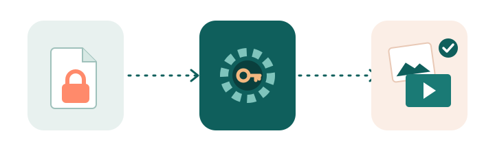

The day my "hidden" photos turned into files I couldn't open
I've used the Secret Album on my Xiaomi phone for years. It's a handy place for things you don't want popping up when you hand your phone to someone: ID scans, receipts, a few personal videos. Pull down on the album list, enter a PIN, and there it all is.
Then I switched phones. I did what most people do and copied the whole internal storage to my laptop before wiping the old device. Weeks later I went looking for a couple of those videos and found a folder full of files with long, ugly names that ended in .lsa and .lsav. Nothing would open them. Not the photo viewer, not VLC, not mpv. Renaming them to .jpg or .mp4 didn't help either.
Searching around, I found plenty of people in the same spot and a handful of websites that offered to "convert" the files if I uploaded them. I wasn't about to upload private photos to a random server. So I dug into how the format actually works, and it turned out to be much simpler than I expected. That digging became unlsa.
So what are .lsa and .lsav files?
When you move something into the Secret Album, the MIUI (now HyperOS) Gallery app encrypts it, moves it to a private folder, and renames it. Photos get the .lsa extension and videos get .lsav. The part in the middle of the file name, something like 3e751332435bfad27569ca4efed1b602, isn't random. It's an MD5 fingerprint of the key that was used to lock the file.
The encryption is AES-128 in CTR mode. Here's the part that surprised me: the key isn't your PIN. It comes from the Gallery app itself, so it's the same on every phone running that version of the app. Your PIN only locks the album screen. That's great news if you're trying to recover your own files, and worth knowing if you thought the Secret Album was a real vault.
Photos and videos are handled a little differently:
- Photos (.lsa) are encrypted from the first byte to the last.
- Videos (.lsav) only have their first 1,024 bytes encrypted. That's the container header, which tells a player where everything is. Encrypting just that part is enough to break playback while keeping the phone fast, since it doesn't have to decrypt a 2 GB video every time you open it.

Why I wrote a script instead of using a website
The people who hide photos in a Secret Album are, almost by definition, the people who shouldn't be uploading them anywhere. unlsa runs on your own machine. It doesn't open a network connection, doesn't need an account, and it never touches your original files. It reads them, writes decrypted copies to a new folder, and that's it.
It's also tiny on purpose. The whole thing is about 60 lines of Python that hands the actual decryption off to OpenSSL, which is already installed on most computers. You can read every line before you run it, and I'd encourage you to.